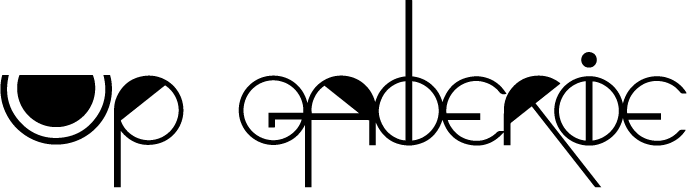
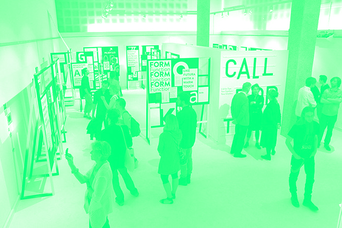

Exposition en Cours
Regard Instable
02.10 - 12.12 - 2015
Organisé par Guy Yanai Knut Navrot, Vera Molnar, Julio Le Parc, Héhé collectif, Richard Mosse
A la frontière visible d'un monde instable, il faut ouvrir l'œil ...

Regard Instable
02.10 - 12.12 - 2016
Regard Instable
02.10 - 12.12 - 2016
Organisé par Guy Yanai Knut Navrot, Vera Molnar, Julio Le Parc, Héhé collectif, Richard Mosse
A la frontière visible d'un monde instable, il faut ouvrir l'œil ...
Exposition A Venir
Regard Instable
02.10 - 12.12 - 2015
Organisé par Guy Yanai Knut Navrot, Vera Molnar, Julio Le Parc, Héhé collectif, Richard Mosse
A la frontière visible d'un monde instable, il faut ouvrir l'œil ...
Archives
2013
Tour de table
02.06 - 02.02 - 2013
Tour de table
02.06 - 02.02 - 2013
Organisé par Leïla Roumi
liLinus Bill + Adrien Horni, Alistair Frost, Luc Fuller,
Ridley Howard, Alex Katz, Guy Yanai
2014
Politiquement correcte
04.09 - 19.12 - 2014
Politiquement correcte
04.09 - 19.12 - 2014